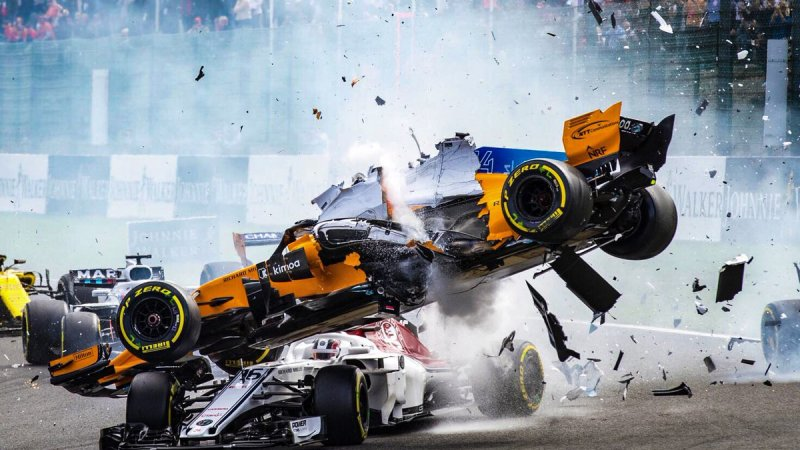
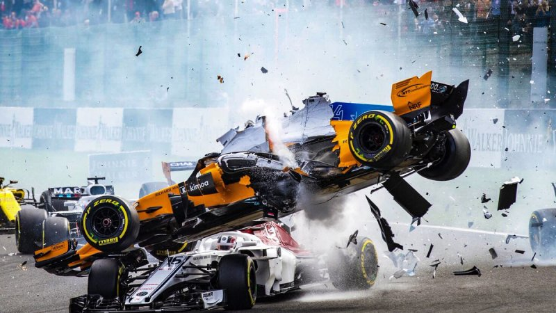

Formule 1-auto's bereiken (verschillend per circuit) snelheden tot ruim boven de 300 km/h waarbij de turbomotor tot 15.000 toeren per minuut begrensd is.De prestaties van de auto's zijn in sterke mate afhankelijk van elektronica, aerodynamica, ophanging en banden.
Het Formule 1-seizoen bestaat uit een serie races, "grands prix" genaamd, gehouden op gespecialiseerde circuits en in mindere mate ook op afgesloten straten. De resultaten van elke race worden gebruikt om ieder jaar twee wereldkampioenen te bepalen: een voor de coureurs en een voor de constructeurs. Zowel coureurs als constructeurs moeten in het bezit zijn van een superlicentie, de hoogste racelicentie die wordt uitgegeven door de FIA.
Europa is het traditionele centrum van de Formule 1 waar (vrijwel) alle teams hun basis hebben en waar ongeveer de helft van alle races wordt gehouden. Het bereik van de Formule 1 is de afgelopen jaren sterk uitgebreid en grands prix worden over de hele wereld gehouden. Enkele races in Europa en Amerika zijn vervallen ten gunste van Azië en het Midden-Oosten. In 2009 werden negen van de achttien races buiten Europa gehouden.
Formule 1 is een zeer groot televisie-evenement waar door miljoenen mensen naar gekeken wordt. Als de duurste sport ter wereld kunnen de economische effecten significant zijn en worden interne politieke en financiële debatten vaak op de voet gevolgd door de media. Er kijken wereldwijd gemiddeld 55 miljoen mensen live naar de races, wat de constructeurs vervolgens hoge commerciële sponsorcontracten oplevert.

 
